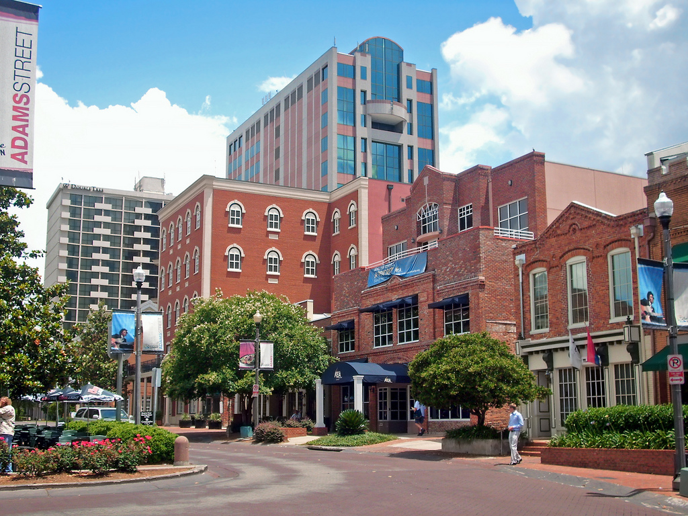

The City of Tallahassee
Home
About
History
Contact Us

Population: 203,650.
Year Founded: 1821.
Region: Northern Florida.
Classification: Urban.
Average Income: 22.11% Lower Than the State.
Main Attractions: Tallahassee Automobile Museum, Tallahassee Museum, Florida State University.
Created for D277©